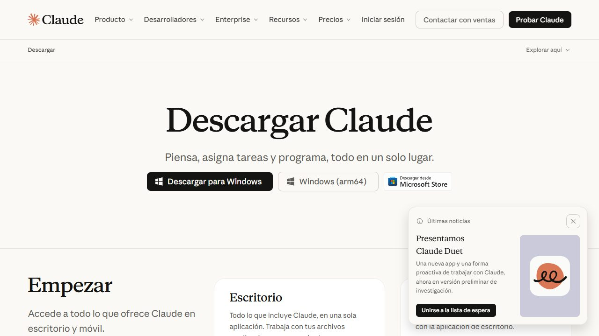
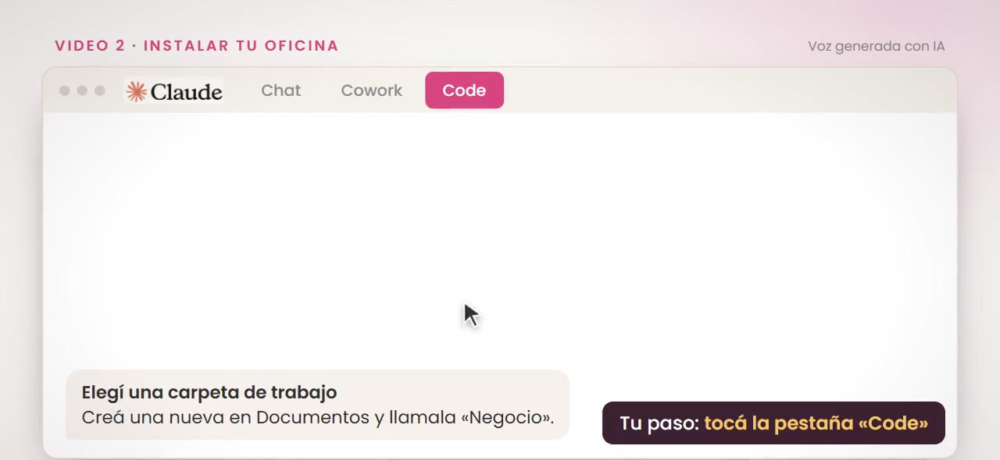
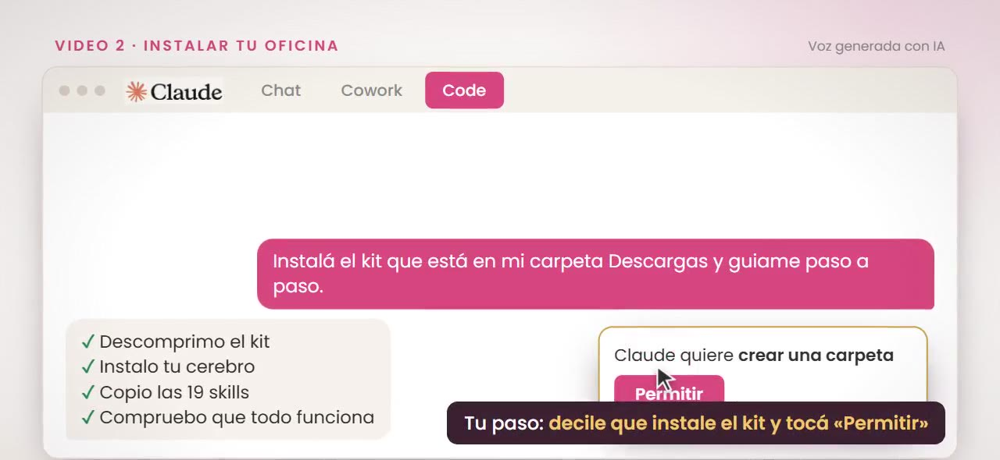
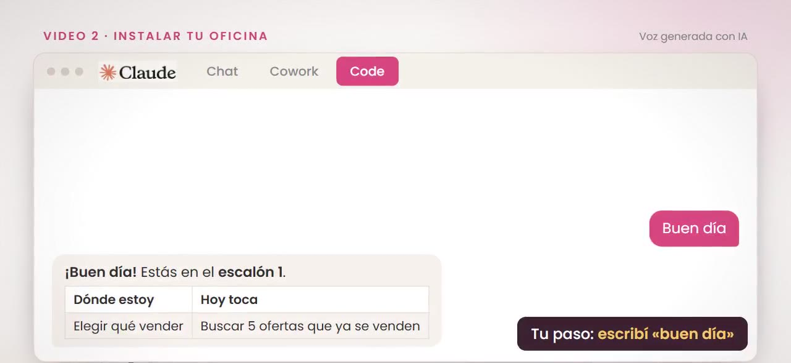
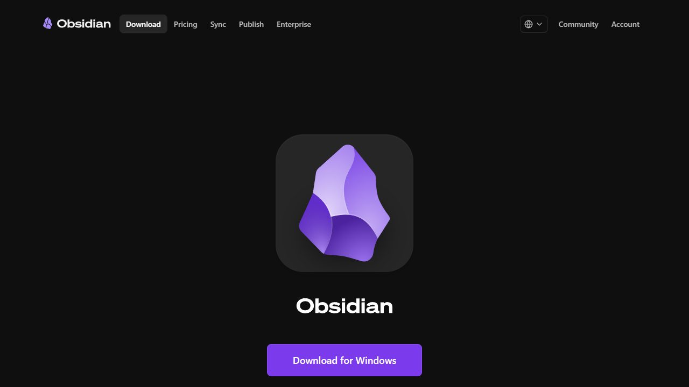
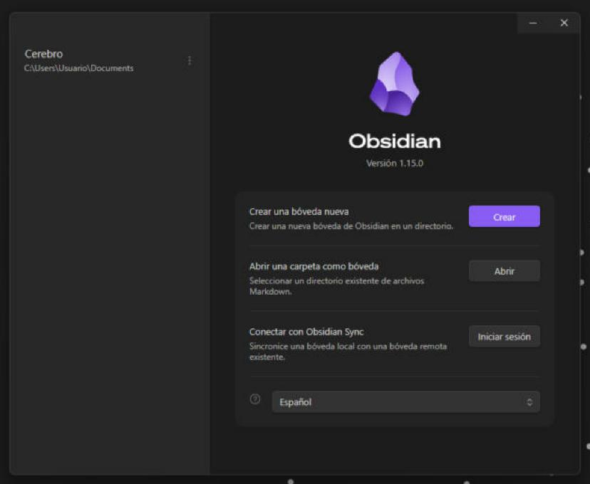
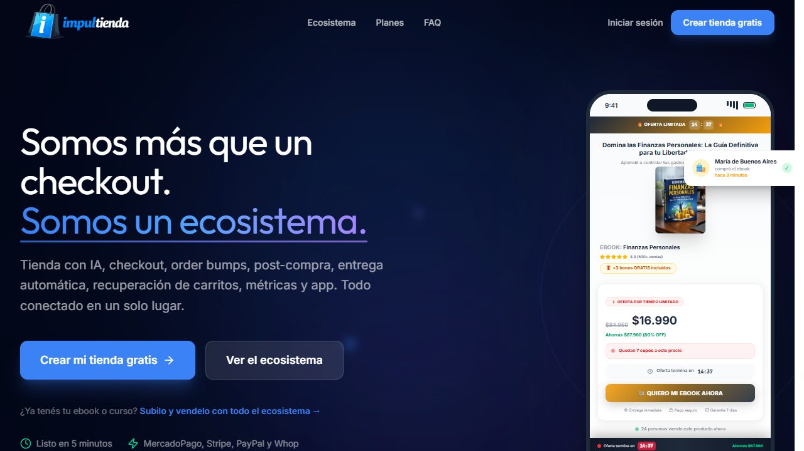
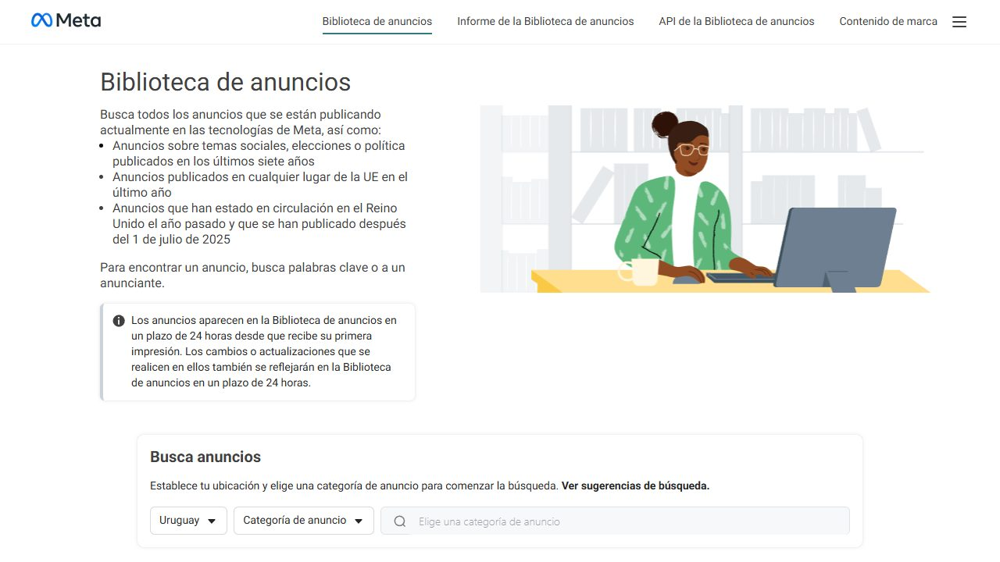

El negocio completo, paso a paso
De cero a 100 por día con tu Claude trabajando con vos
Vendo productos digitales hace 4 años. Esto no es teoría: es cómo lo estoy haciendo yo hoy, paso por paso, para que lo hagas con tu propio Claude.
Esta guía la armó mi Claude a partir de mi operativa real

Empezá por acá: pasale esta guía a tu Claude
No tenés que leer ni entender todo esto vos sola, ni copiar y pegar nada. Bajás un archivo, le decís una frase a Claude y él hace el resto.
| 1 | Instalá Claude en tu computadora (paso 0.1, con todos los clics) |
| 2 | Descargá el kit con el botón de abajo. Queda en tu carpeta Descargas |
| 3 | Escribile a Claude una sola frase: «Instalá el kit kit-de-0-a-100 que está en mi carpeta Descargas y guiame paso a paso» |
| 4 | Claude instala todo, te hace preguntas para saber de dónde arrancás y te lleva de la mano |
Estás en el celular. El kit se usa en la computadora, porque ahí se instala Claude. Abrí esta misma dirección en tu compu y descargalo desde ahí.
¿Tocás el botón y no baja nada? Casi siempre es porque la página se abrió adentro de Instagram o WhatsApp. Copiá la dirección, pegala en Chrome (o Safari, o Edge) y tocá el botón de nuevo.
| Qué hay adentro del kit | Para qué |
|---|---|
| Esta guía completa | Para que tu Claude la tenga entera y no tengas que copiarle nada |
| Tu cerebro inicial | El manual, tu tablero, las reglas del método, los números y los errores típicos |
| 20 skills | Un manual por tarea: los 12 escalones, el plan de escala, abrir un país y el día a día |
| El motor de PDF | Traduce tus PDF a otro idioma sin romper el diseño, con su paso a paso. Solo Windows |
| El instalador | Las instrucciones que sigue Claude para dejar todo andando |
Si el botón no descarga: plan B
Copiá la guía con este botón y pegala en Claude. Sirve igual, solo que sin las skills instaladas.
Ver el pedido que se copia
Te paso la guía «De 0 a 100 por día». Este es su enlace: https://guia.romimanfiesta.com Abajo va también el texto completo, por si no podés abrir el enlace. Quiero que seas mi guía para hacerla. 1. Leela entera antes de responder. 2. Primero haceme preguntas, de a una, para entender de dónde arranco: si ya tengo algo o empiezo de cero, cuánto tiempo y cuánta plata tengo, en qué país vivo, dónde quiero vender y qué temas me interesan. 3. Después desglosame la guía en un paso a paso para mí: qué hago hoy, qué hacés vos y qué sigue. 4. La Biblioteca de Anuncios no se saltea. Antes de armar cualquier producto vamos a mirar ahí qué se está vendiendo. Si te propongo inventar algo desde cero, frename. 5. Un paso por vez. Esperá mi «listo» antes de seguir. Explicame todo simple: no sé programar. 6. No gastes, publiques ni prendas nada sin mi OK.
Hay un paso que no se saltea nunca: la Biblioteca de Anuncios. Arranques de donde arranques, antes de crear nada vas a ir ahí a ver qué se está vendiendo.
- AMi historia y por qué funciona
- 0Instalar tu oficina
- 1Los 12 escalones
- 2Campañas y plan de escala
- 3Abrir otros idiomas
Parte A
Me copiaron el producto. Lo llevé a otros idiomas.
Los idiomas a los que lo fui llevando
No hablo ninguno de esos idiomas. Lo que tengo es un sistema, y ese sistema es lo que vas a instalar acá.
Cómo trabajo hoy
| Sin mostrar la cara | Estos productos no los vendo con mi marca personal ni con mi imagen |
| Solo con Facebook | Ni siquiera uso Instagram: son anuncios en Facebook y nada más |
| Todo vive en Claude | Hoy todo mi negocio está ahí adentro: lo que vendo, lo que aprendo y lo que decido |
| Desde octubre de 2026 | Vendo productos digitales hace 4 años, pero trabajo de esta forma desde hace muy poco |
| Esto lo armó Claude | La guía, el kit y los videos. Yo le dije qué quería y él hizo el resto |
| Se actualiza | Esta guía no queda quieta: cada vez que cambio algo en mi forma de trabajar, Claude la actualiza. Entrás siempre a este mismo enlace y ves la última versión |
| Es mi proceso | Lo que estoy aprendiendo en el camino. Seguro hay un millón de formas más; esta es la que uso yo ahora |
Lo que armé en estos 26 días
El número de arriba avanza solo: es la cantidad de días desde que empecé a trabajar así. Esto es lo que entró en ese tiempo, en orden.
| Cuándo | Qué armé | Qué cambió |
|---|---|---|
| Semana 1 | El cerebro: pasé a notas todo lo que sabía del negocio | Claude dejó de arrancar de cero cada día |
| Semana 1 y 2 | Las llaves: la tienda, los anuncios y el mail conectados | Empezó a hacer el trabajo, no solo a explicarlo |
| Semana 2 | El primer país armado entero con este sistema | Tienda, PDF traducidos, página y anuncios sin hablar el idioma |
| Semana 2 y 3 | Un país nuevo cada pocos días: cuatro más | El paso a paso quedó escrito como skill y cada país salió más rápido |
| Semana 3 | Claude vigila los anuncios y propone la escala por hora de cada país | Dejé de mirar el panel a cada rato |
| Semana 3 | Un tablero diario con lo cobrado y lo gastado | Decido con lo que entró de verdad |
| Semana 4 | Apagué los países que no vendieron y abrí otro | Cortar rápido libera plata para el siguiente |
| Semana 4 | Esta guía y el kit | Todo lo anterior, ordenado para que lo instales vos |
Lo que necesitás para empezar
| Qué | Cuánto | Cuándo |
|---|---|---|
| Claude, plan Pro como mínimo | Unos 20 dólares por mes. La versión gratis no alcanza | Desde el día 1 |
| Tienda | Yo uso Impultienda. Tiene 45 días gratis | Cuando tengas el producto |
| Anuncios | 35 dólares por día mientras probás | Cuando salgan tus primeros anuncios |
| Una computadora | Windows o Mac. Con el celular solo no alcanza | Desde el día 1 |
¿Cuánta plata necesito para saber si funciona?
| Qué | Cuánto |
|---|---|
| Claude, el primer mes | Unos 20 dólares |
| La tienda | 0 los primeros 45 días. Después tiene un costo mensual: miralo en su página y anotate la fecha en que termina la prueba |
| La primera prueba de anuncios | 5 anuncios a 7 dólares por día son 35 por día. Cuatro días de prueba: unos 140 dólares |
| Para tu primer intento | Reservá entre 150 y 200 dólares para la primera prueba, que puedas perder mientras aprendés. Para llegar al escalón 10 calculá entre 250 y 350 |
Dudas antes de empezar
¿Sirve para vender mi ropa o mis productos físicos?
No. Esta guía es para productos digitales: cosas que se descargan, como un PDF. No hay stock ni envíos.
¿Cuánto tiempo lleva?
La instalación de hoy, menos de una hora. Después, una o dos horas por día. Los primeros escalones los podés hacer en una semana.
¿En cuánto tiempo voy a vender?
No te lo puedo prometer. Hay productos que venden en la primera tanda y otros que no venden nunca: por eso existe la regla de cortar rápido y probar otro.
¿Es seguro que Claude toque mi computadora?
Claude trabaja dentro de la carpeta que le elegiste y te pide permiso antes de cada cosa. Nunca ve tus contraseñas ni tus tarjetas: eso lo escribís siempre vos.
¿Cómo cobro la plata?
La tienda cobra por vos, con tarjeta y otros medios, y después te lo pasa. En el escalón 4 Claude te guía para conectarlo según tu país.
¿Tengo que facturar o pagar impuestos?
Depende de tu país. Antes de escalar, consultalo con un contador de donde vivís.
¿Y si alguien pide que le devuelva la plata?
Se devuelve desde la tienda. Pasa poco, y es parte del negocio.
Uso Instagram, ¿necesito Facebook?
Sí. Los anuncios salen desde una página de Facebook, aunque nunca publiques ahí. Conviene que tu perfil de Facebook sea el tuyo de siempre, no uno recién creado.
¿Cómo cancelo Claude si no me sirve?
Desde Configuración, en la parte de tu plan. Se corta al terminar el mes pago.
100 por día es una meta, no una garantía. Vas a invertir en Claude y en anuncios, y algunos intentos no van a vender. Acá te muestro el camino y cómo cortar rápido lo que no funciona.
Parte 0
Instalar tu oficina
Marcá cada casilla al terminar: tu avance queda guardado en este navegador.
Hoy, solo estas 3 cosas
| 1 | Instalar Claude y abrirlo en la pestaña Code | unos 20 minutos |
| 2 | Descargar el kit | 1 minuto |
| 3 | Escribirle una frase a Claude | 10 a 15 minutos, mientras instala |
Todo lo demás no es para hoy. Más abajo vas a ver cosas con nombres raros. Las vas a hacer otro día y con Claude guiándote. Si hoy llegás hasta la frase, ya está.
Antes de tocar nada: qué es cada cosa
| Palabra | Qué es, en simple |
|---|---|
| Claude | Una inteligencia artificial a la que le escribís como a una persona. Acá va a ser tu empleada: investiga, escribe, arma y te muestra |
| Pestaña Code | La parte de Claude que puede trabajar dentro de tu computadora: crear archivos, instalar cosas, abrir páginas. El chat común no puede |
| Cerebro | Una carpeta de notas en tu computadora. Ahí Claude guarda lo que aprende de tu negocio para no olvidarlo de un día para el otro |
| Skill | Un manual que Claude sigue para hacer bien una tarea, por ejemplo armar tu tienda |
| Kit (el zip) | Un solo archivo que trae el cerebro inicial y las 20 skills. Claude lo abre y lo instala solo |
| Conector | Un permiso para que Claude vea una cuenta tuya (anuncios, ventas, mail) sin que le pases la contraseña |
Instalá Claude
Claude es un programa que se instala en tu computadora, como cualquier otro. Necesitás el plan pago más chico (se llama Pro, unos 20 dólares por mes): la versión gratis no trae la parte que vamos a usar.

| # | Qué hacés | Qué vas a ver |
|---|---|---|
| 1 | Entrá a claude.ai/download y tocá Descargar para Windows (o para Mac) | Abajo o arriba del navegador aparece un archivo bajando |
| 2 | Cuando termine, tocá ese archivo para abrirlo. Si no lo ves, está en tu carpeta Descargas | Windows puede preguntar «¿Querés permitir que esta aplicación haga cambios?». Tocá Sí: es normal |
| 3 | Se abre Claude y te pide entrar. Si nunca lo usaste, tocá Crear cuenta y usá el mail que usás siempre | Te manda un código a ese mail para confirmar |
| 4 | Te ofrece elegir un plan: elegí Pro, pago mensual, y poné tu tarjeta. Si te dejó entrar sin pagar, tocá tu nombre (abajo a la izquierda) y buscá Mejorar plan; en inglés dice Upgrade | Se cobra en el momento. Se puede cancelar cuando quieras desde Configuración |
| 5 | Arriba vas a ver tres pestañas. Tocá la que dice Code | Es la parte de Claude que puede crear archivos e instalar cosas. La de Chat no puede |
| 6 | Te pide elegir una carpeta. En la ventana que se abre, tocá Documentos (está a la izquierda) y después el botón Seleccionar carpeta | Ahí va a trabajar Claude. Si pregunta si confiás en esa carpeta, decí que sí: es tuya |
| 7 | Abajo hay una caja para escribir. Escribí hola, ¿me ves? y apretá Enter | Si te contesta, ya está andando |

Si Claude te habla en inglés, escribile: «hablame siempre en español y explicame todo simple».
Descargá el kit
Es un solo archivo. Trae esta guía completa, tu cerebro y las 20 skills. No lo abras: lo abre Claude.
Estás en el celular. El kit se usa en la computadora, porque ahí se instala Claude. Abrí esta misma dirección en tu compu y descargalo desde ahí.
¿Tocás el botón y no baja nada? Casi siempre es porque la página se abrió adentro de Instagram o WhatsApp. Copiá la dirección, pegala en Chrome (o Safari, o Edge) y tocá el botón de nuevo.
Te pregunta si querés guardarlo: decí que sí. Si el navegador avisa que «este tipo de archivo puede dañar tu equipo», tocá Conservar: es un archivo comprimido con textos adentro. Queda en tu carpeta Descargas con el nombre kit-de-0-a-100.
Escribile una frase a Claude
Volvé a Claude, al mismo chat donde le dijiste hola, y escribile esto tal cual:
Instalá el kit kit-de-0-a-100 que está en mi carpeta Descargas y guiame paso a paso.

Clic por clic: qué vas a ver mientras instala
1. Escribí la frase (o tocá «Copiar» y pegala con Ctrl + V) y apretá Enter.
2. Claude empieza a trabajar y te pide permiso muchas veces, a veces en inglés (dice «Allow»). Mientras esté instalando el kit, decile siempre que sí. En Mac además puede aparecer un cartel de la computadora pidiendo acceso a tus carpetas: tocá Permitir.
3. Te va a hacer unas preguntas: tu nombre, dónde vivís, si ya tenés algo armado. Contestá con tus palabras.
4. Tarda entre 10 y 15 minutos. No cierres la ventana.
5. Al final te muestra una tabla con lo instalado. Si alguna fila dice que falta algo, escribile «arreglá lo que falta».
6. Para probar que quedó bien, escribile: «¿cuándo un anuncio es ganador?». Si te contesta con una regla con números, funcionó.
Listo por hoy
Si Claude te mostró la tabla de lo instalado, terminaste. Cerrá la computadora. Todo lo que sigue más abajo es para otro día.
Mañana: tu primer «buen día»
Mañana, y cada día: abrís Claude, pestaña Code, empezás un chat nuevo (la carpeta ya queda elegida) y escribís «buen día». Así empieza cada día de trabajo. La primera vez, Claude te hace una entrevista corta y arma tu oficina.
Buen día
| Escribís | Pasa |
|---|---|
| «Guardá esto» | Guarda lo nuevo del chat en el cerebro y lo respalda. Al cerrar cada sesión |
| «Regla nueva» | Cuando Claude se equivoca: lo convierte en regla para que no se repita |
| «Ordená el cerebro» | Ordena el cerebro. Una vez por semana |
| «Pasá la posta» | Cierra un chat largo y deja todo listo para seguir en uno nuevo |

Lo que vas a ir sumando
Nada de esto es para hoy. Claude te avisa cuándo toca cada cosa y te guía clic por clic. Si te perdés, sacale una foto a tu pantalla y preguntale.
| Qué | Cuándo | Para qué |
|---|---|---|
| Obsidian | Cuando quieras ver tu cerebro | Es la ventana para leer las notas que escribe Claude. Gratis |
| Chrome con Claude adentro | Antes del escalón 1 | Para que Claude pueda mirar páginas con vos. Sin esto no se puede hacer el escalón 1. Pedile: «ayudame a conectar Chrome» y seguí sus pasos. Para probar, escribile «abrí google.com» |
| ChatGPT | Escalón 3 | Para generar las imágenes. Con la versión gratis suelen salir pocas imágenes por día: repartilas en 2 o 3 días, o pagá un mes |
| La tienda | Escalón 4 | Donde se cobra y se entrega |
| Página de Facebook, cuenta publicitaria (sin tarjeta), llave de Meta Ads, píxel y token | Escalón 6 | Para poder anunciar. Todavía no se gasta nada |
| Tarjeta en la cuenta publicitaria | Escalón 8 | Recién ahí empezás a gastar en anuncios |
| Respaldo en GitHub | Opcional | Una copia de seguridad de tu cerebro |
Mirá tu cerebro en Obsidian
Claude escribe en el cerebro; Obsidian es la ventana para leerlo. Los dos miran la misma carpeta. Se baja gratis de obsidian.md/download.

¿No sabés dónde quedó tu cerebro? Preguntale a Claude: «¿en qué carpeta quedó mi cerebro?». Te dice la ruta exacta, y esa es la que elegís en Obsidian.
¿Qué cerebro recibís y dónde queda?
| Qué es | Dónde queda | |
|---|---|---|
| Tu cerebro | Viene con el kit. Trae el método y las reglas, pero todavía no sabe nada de tu negocio: lo vas llenando vos con cada día de trabajo | En tu computadora, en una carpeta que se llama cerebro, dentro de tu carpeta de usuario |
| Mi cerebro | Es el mío, con mi negocio adentro. No se entrega: tiene mis productos y mis números | En mi computadora |
Tu cerebro es tuyo y queda en tu computadora. Nadie más lo ve, ni yo.

No edites a mano mientras Claude trabaja. Para sumar algo, decile «guardá esto en el cerebro: …» y lo ordena.
Las cuentas, cuando toque
Esto lo hacés vos. Claude nunca crea cuentas ni escribe contraseñas.
| Cuenta | Para qué | Cuándo |
|---|---|---|
| Gmail del negocio | Opcional: una casilla separada de la personal. Si preferís, seguí con tu mail de siempre | Cuando quieras |
| GitHub | Respaldo automático de tu cerebro. Gratis, en github.com/signup | Opcional |
| Facebook y Business Manager | Página, píxel y cuenta publicitaria. En business.facebook.com, con un perfil real y con antigüedad | Escalón 6 |
| Tienda (Impultienda) | Donde se cobra y se entrega el producto. Mirá el recuadro de abajo | Escalón 4 |
| Google Drive | Para guardar los PDF que recibe quien compra. Viene con el Gmail | Escalón 4 |
| Tarjeta para anuncios | La cargás vos en la cuenta publicitaria. Nunca se la pases a Claude | Escalón 8 |
La tienda que uso yo: Impultienda

| Por qué | Es la que tiene llave para Claude: él arma la tienda, los productos y el checkout por vos |
| Qué plan | Yo uso el plan Max y es el que te recomiendo, porque es el que trae esa llave |
| Cuánto sale al empezar | 45 días gratis. Te pide la tarjeta al suscribirte, pero cobra recién cuando termina la prueba, y podés cancelar antes sin cargo |
| Mi consejo | Aprovechá esos 45 días: alcanzan para hacer los 12 escalones y saber si esto es para vos antes de pagar el plan |
Las llaves de Claude
La de la tienda se conecta en el escalón 4, y la de Meta Ads junto con el token en el 6. Leelo ahora si querés entender la idea; hacerlo, más adelante.
Pensalo así: Claude es tu empleada nueva. Sabe hacer el trabajo, pero todavía no tiene las llaves de la oficina. Cada conector es una llave: una para ver tus anuncios, otra para entrar a tu tienda, otra para leer tu mail. Vos elegís qué llaves le das, y se las podés sacar cuando quieras.
Una llave no es tu contraseña. Claude nunca ve ni guarda tus claves: cuando conectás algo, se abre la página de ese servicio, entrás vos como siempre y tocás «Permitir».
Tus llaves, una por una
| Llave | Lo que Claude hace solo | Lo que hacés vos |
|---|---|---|
| Meta Ads la más importante | Mira tus campañas, cuánto gastó y qué vendió cada anuncio. Busca en la Biblioteca de Anuncios. Sube las imágenes. Arma la campaña, los conjuntos y los anuncios, con país, idioma, presupuesto y fecha de salida. Cambia presupuestos. Revisa que el píxel esté recibiendo las visitas y las compras | Cargar la tarjeta, dar el OK y prender |
| Tu tienda | Crea la tienda y los productos. Pone los precios y la moneda de cada país. Arma el checkout, los extras, la oferta después de la compra y la página de venta. Carga lo que recibe quien compra. Configura el dominio. Te muestra ventas, carritos abandonados y pagos rechazados | Crear la cuenta, conectar el cobro y aprobar los cambios. El token se pega en el escalón 6 |
| Gmail | Lee los mails de tus clientes y te deja la respuesta escrita en borrador | Leerla y enviarla |
| Calendario | Agenda recordatorios y revisiones (por ejemplo, «volver a mirar este país el lunes») | Nada |
| Claude en Chrome | Maneja tu navegador donde no hay llave: genera las imágenes en ChatGPT, sube los PDF a Drive, prepara la página de Facebook, mira páginas de otros | Tener la sesión iniciada en cada sitio |
| Hotmart opcional | Si vendés por ahí: te muestra ventas y crea cupones | Nada |
Cuando abro una tienda nueva, lo único técnico que hago yo a mano es pegar el token. Lo demás lo arma Claude y yo voy aprobando.
Qué es el token y cómo se pega, clic por clic
El token es una clave larga que te da Meta. Sirve para que tu tienda le avise a Meta cada vez que alguien compra, así tus anuncios aprenden a quién mostrarse. Como es una clave, Claude no la puede escribir por vos: te dice dónde copiarla y dónde pegarla.
1. Pedile a Claude: «creá el píxel de mi tienda y decime dónde saco el token».
2. Entrá a Meta, al Administrador de eventos, y tocá tu píxel.
3. Abrí la pestaña Configuración y bajá hasta API de conversiones.
4. Tocá Generar token de acceso. Aparece un texto larguísimo que empieza con «EA». Copialo entero.
5. Volvé a tu tienda: Configuraciones → Meta / Tracking. Pegalo en el campo del token, al lado de tu píxel, y guardá.
6. Decile a Claude «ya pegué el token, comprobá que funciona». Te responde si Meta lo aceptó.
Los nombres de los botones de Meta cambian cada tanto. Si no encontrás alguno, mandale a Claude una captura de tu pantalla y preguntale dónde está.
Clic por clic: darle a Claude la llave de Meta Ads
1. En Claude, tocá tu nombre (abajo a la izquierda) y entrá a Configuración.
2. Tocá Conectores. Vas a ver una lista.
3. Buscá el de Meta Ads y tocá Conectar.
4. Se abre Facebook. Entrá con tu cuenta, elegí tu cuenta publicitaria y tocá Permitir.
5. Volvé a Claude. Al lado del conector ahora dice «Desconectar»: esa es la señal de que quedó.
Clic por clic: darle a Claude la llave de tu tienda (Impultienda)
1. En Claude: tu nombre → Configuración → Conectores → Agregar → Agregar conector personalizado.
2. En nombre escribí Impultienda. En dirección pegá https://mcp.impultienda.ar/mcp. Tocá Agregar.
3. Tocá Conectar. Se abre el inicio de sesión de Impultienda: entrá con tu cuenta y autorizá.
4. Cuando el botón diga «Desconectar», ya está.
5. Probalo en un chat nuevo con esta pregunta: «¿qué tiendas tiene mi cuenta?».
Revisá qué conectores tengo activos. Para cada uno, hacé una lectura simple y decime en una tabla: conectado o no, y qué podés ver. No cambies nada.
Qué hago si…
Hacé que tu plan de Claude rinda
El plan Pro tiene un tope de uso que se recarga solo cada pocas horas. Todo lo que Claude lee y escribe gasta de ese tope. No hace falta entender cómo se mide: alcanza con estas costumbres, que ya vienen cargadas en tu kit.
| Costumbre | Por qué ahorra |
|---|---|
| Un tema por chat | En cada mensaje Claude vuelve a leer toda la conversación. Un chat largo gasta más en cada respuesta |
| Cuando el chat se hace largo, «pasá la posta» | Te deja un resumen y seguís en un chat nuevo, liviano |
| Un pedido completo en un solo mensaje | Diez mensajes cortos gastan más que uno claro |
| Dejá que lea el cerebro, no le recontés todo | Para eso está el tablero: es corto a propósito |
| Pedí la respuesta en una tabla corta | Lo que escribe también gasta |
| Capturas, solo cuando hacen falta | Una imagen gasta mucho más que una frase |
| Lo pesado, a primera hora | Armar un producto o una tanda de anuncios consume mucho: empezalo con el tope recién recargado |
| «Guardá» antes de cerrar | Mañana no hay que rehacer nada de hoy |
Si Claude dice que llegaste al límite, no se rompió nada. Esperá a que se recargue y escribile «seguí desde la posta». Si te pasa seguido, escribile «estoy gastando mucho»: usa la skill cuidar-el-plan y te dice qué cambiar.
Parte 1
Los 12 escalones
Un solo producto, un solo camino. No pases al siguiente hasta cumplir el «pasás cuando».
Antes del escalón 1: vendé algo que ya se vende
Casi todas queremos inventar un producto desde cero. A veces funciona. La gran mayoría de las veces, no, y te enterás después de haber gastado.
Yo lo hago al revés: primero busco un producto que ya se esté vendiendo, y recién ahí creo el mío, desde cero, basándome en ese. Eso es modelar.
| Camino | Qué es | Qué suele pasar |
|---|---|---|
| Inventar | Crear algo que nadie vende todavía | No sabés si alguien lo quiere hasta que gastaste |
| Copiar | Usar los textos, imágenes o el nombre de otro | Está mal, te pueden bajar la cuenta y no aprendés nada |
| Modelar así lo hago yo | Mirar qué problema resuelve, a quién, a qué precio y cómo está armada la página. Y crear el tuyo, con tu contenido, tu nombre y tus imágenes | Arrancás sabiendo que hay gente que ya compra eso |

Nichos donde más ofertas vas a encontrar
Son ejemplos para arrancar la búsqueda del escalón 1. Lo que manda es lo que veas vendiéndose hoy en la Biblioteca de Anuncios.
| Nicho | Qué se vende |
|---|---|
| Bienestar emocional | Diarios guiados, cuadernos de escritura, planes de 21 o 30 días para ansiedad, hábitos o descanso |
| Crianza y niños | Kits de actividades para imprimir, juegos de emociones, experimentos caseros, rutinas |
| Espiritualidad | Agendas y rituales por fecha, manifestación, cartas, calendarios lunares |
| Oficios y manualidades | Planos, moldes y patrones para carpintería, herrería, costura, crochet |
| Cocina y alimentación | Recetarios por objetivo o por aparato, menús semanales, viandas |
| Estudio | Láminas, resúmenes y fichas por materia o carrera |
| Plata y negocio | Planillas de presupuesto, plantillas para vender, guías para emprender |
| Mascotas | Guías de adiestramiento, recetas caseras, cuidados por raza |
Cómo elegir: un nicho sirve cuando ves el mismo tipo de producto anunciado por varias personas distintas, desde hace semanas. Si lo vende una sola, todavía no está probado.
Los escalones en video
Parte 2
Campañas: cómo las armo, cómo las leo y cómo escalo
Escalar es poner más plata en lo que ya demostró que vende. Nada más. No se escala una idea ni una corazonada: se escala un anuncio que ya trajo ventas cobradas.
Hay muchas formas de escalar. Acá te cuento la que uso yo hoy; no es la única ni la mejor para todo el mundo.
Primero, dos palabras: ABO y CBO
Es solo quién reparte la plata.
| Quién reparte | Pensalo así | Para qué lo uso | |
|---|---|---|---|
| ABO | Vos. Le ponés un monto a cada conjunto | Le das la misma plata a cada una de tus vendedoras, para ver cuál vende | Para probar: todos los anuncios reciben lo mismo y la comparación es justa |
| CBO | Meta. Le ponés un monto a la campaña y él lo reparte | Le das toda la plata a un encargado y él decide a quién mandarla | Cuando ya sé qué funciona y quiero que Meta empuje lo mejor. Se usa recién cuando un país tiene 3 ganadores; hasta ahí, todo en ABO |
Segundo, los tres números
Vas a escuchar «uno-cinco-uno» o «uno-uno-uno». Son siempre lo mismo, en este orden: campañas · conjuntos · anuncios por conjunto.
| Estructura | Qué es | Cuándo la uso |
|---|---|---|
| 1 · 5 · 1 | 1 campaña madre, 5 conjuntos, 1 anuncio en cada uno. En ABO, a 7 dólares por día cada conjunto (o el equivalente en tu moneda) | Para probar. Es mi campaña de siempre: cinco anuncios compitiendo en igualdad |
| 1 · 1 · 1 | 1 campaña, 1 conjunto, 1 anuncio: el ganador solo, con su propia plata | Para escalar. Es la que más uso: saco al ganador de la prueba y le subo de a poco |
Antes de anunciar: las 4 piezas de Meta
Sin estas cuatro, no hay campaña. Se arman una sola vez por marca, en el escalón 6, con Claude guiándote clic por clic.
| Pieza | Qué es | Dónde se arma | Quién hace qué | Cómo sé que quedó bien |
|---|---|---|---|---|
| Página de Facebook | La cara de tu marca. Los anuncios salen a su nombre | facebook.com/pages/create | Claude prepara nombre, descripción, dos fotos distintas y 4 publicaciones. Vos das los clics | Tiene foto de perfil, portada y publicaciones. Una página vacía hace desconfiar |
| Cuenta publicitaria | La «billetera» desde donde se pagan los anuncios | business.facebook.com | Vos la creás en el escalón 6, en dólares y con la zona horaria de donde vivís, y cargás la tarjeta en el 8. Eso Claude no lo toca nunca | Aparece activa y, desde el escalón 8, con un medio de pago |
| Píxel | El código que le avisa a Meta quién compró, para que aprenda a quién mostrarle el anuncio | Administrador de eventos | Claude lo crea o te guía, y carga su número en la tienda | Abrís tu página y tu checkout, y en el Administrador de eventos aparece la visita |
| Token | La clave larga que conecta la tienda con el píxel por un segundo camino más seguro | Administrador de eventos → tu píxel → Configuración → API de conversiones → Generar token de acceso | Lo copiás vos y lo pegás vos en la tienda. No pasa por el chat | Hacés una compra de prueba y Meta la registra como compra |
El error que más plata cuesta: prender los anuncios sin el token cargado. La tienda cobra, pero Meta no se entera de las ventas y aprende a ciegas. Primero la compra de prueba registrada, después los anuncios.
Mi campaña de prueba, campo por campo
Es la 1 · 5 · 1 de arriba. Así queda cargada cada casilla del Administrador de anuncios. Claude la arma en pausa con estos mismos valores y vos la revisás.
| Casilla | Qué pongo | Por qué |
|---|---|---|
| Objetivo de la campaña | Ventas | Para que Meta busque compradoras, no curiosas |
| Presupuesto | En cada conjunto (ABO), no en la campaña | Así los cinco anuncios reciben lo mismo y la comparación es justa |
| Monto por conjunto | 7 dólares por día (o el equivalente en tu moneda) | Alcanza para saber si un anuncio vende sin arriesgar de más |
| Evento de conversión | Compra, con tu píxel | Meta optimiza por lo que le pedís: si le pedís visitas, trae visitas |
| Público | Solo país e idioma. Sin edad, sin género, sin intereses | Público abierto: el anuncio encuentra solo a su gente |
| Ubicaciones | Automáticas | Meta reparte donde sale más barato |
| Anuncios por conjunto | Uno solo | Si hay dos, no sabés cuál vendió |
| Fecha de inicio | Mañana a las 00:00 | Un anuncio que arranca a mitad del día gasta mal su primer día |
| Botón | Ver más | Es el que mejor me funciona para este tipo de producto |
| Enlace | A tu página, con las etiquetas de seguimiento en «Parámetros de URL». Son siempre estas, tal cual: utm_source=facebook&utm_medium=paid&utm_campaign={{campaign.name}}&utm_term={{adset.name}}&utm_content={{ad.name}} | Para saber de qué anuncio vino cada venta |
| Estado | La campaña en pausa hasta que la revises; los conjuntos y los anuncios de adentro, activos | Así prendés un solo interruptor, el de la campaña. Ese clic es tuyo |
| Cómo nombro | Ejemplo | Para qué |
|---|---|---|
| La campaña | PRUEBA · país · producto | Hay una sola campaña de prueba por producto. Las tandas nuevas entran ahí |
| Cada conjunto y su anuncio | A1 15-11, A2 15-11… | Letra de la tanda, número del anuncio y fecha de salida. A simple vista sabés cuánto lleva corriendo |
| Las renovaciones | R1 A3 17-11 | R de renovación, de qué anuncio sale y la fecha |
| Lo que nunca va en un nombre | Palabras de salud, plata, religión o política | Meta las lee y puede frenar la cuenta |
Los números que miro siempre
El panel de anuncios tiene decenas de columnas. Yo decido con estas, en este orden.
| Número | Qué es | Dónde lo miro | Qué me dice |
|---|---|---|---|
| Ventas cobradas | Las compras que entraron de verdad | En la tienda, no en Meta | Es el único que decide. Meta a veces cuenta ventas que no se cobraron |
| Gasto | Lo que salió en anuncios | En Meta | Contra esto se compara todo |
| Costo por venta | Gasto dividido por ventas | Lo calcula Claude | Tiene que quedar por debajo de tu punto de empate |
| Retorno | Cobrado dividido por gastado | Lo calcula Claude | Más de 2 con 4 ventas o más: ganador |
| Cobrado por venta | Todo lo cobrado, con los extras, dividido por las ventas | En la tienda | Si sube, podés pagar más por cada venta. Ahí está la ganancia |
| Visitas a la página y al checkout | Cuánta gente llega y cuánta pasa a pagar | En la tienda | Mucha visita y poco checkout: falla la página. Mucho checkout y poca venta: falla el pago |
| Pagos fallados | Compras que no pasaron | En la tienda | Si son muchos, primero se arregla el cobro y después se escala |
| Clics y costo por clic | Cuánta gente toca el anuncio y cuánto cuesta | En Meta | Solo para saber qué arreglar del anuncio. Nunca para decidir si es ganador |
| Frecuencia | Cuántas veces vio el anuncio la misma persona | En Meta | Si pasa de 2 o 3 en pocos días, el público es chico o el anuncio se cansó |
Cómo decido con cada anuncio
| Lo que veo | Qué hago |
|---|---|
| Gastó la mitad del precio del producto y no vendió | Se apaga |
| Tiene 1 venta | Se espera. No se decide con una sola venta |
| Tiene 2 o 3 ventas | Va bien, se deja correr |
| 4 ventas o más, pero lo cobrado no llega al doble del gasto | Vende caro: se deja, no se escala |
| 4 ventas o más y lo cobrado supera el doble del gasto | Ganador: se renueva y se escala |
| Mucho gasto y cero ventas en toda la campaña | Antes de culpar al anuncio, se revisa el píxel y el checkout |
| Venía vendiendo y tuvo un día flojo | No se toca: se mira hoy más los 4 días anteriores |
Los primeros 3 días solo se aplica la regla de apagar. Nada más se toca: ni presupuesto, ni texto, ni público. Cada cambio reinicia el aprendizaje del anuncio.
Mi rutina de todos los días
| Momento | Qué le pido a Claude | Cuánto me lleva |
|---|---|---|
| A la mañana | «Buen día»: lee el tablero, cruza lo cobrado con lo gastado y propone qué apagar | 10 minutos |
| A la mañana | La tanda nueva de anuncios, cuando toca renovar | 20 minutos de revisar |
| En la hora en que compra cada país | El plan de escala: dónde subir y dónde no | 5 minutos |
| A la noche | «Guardá»: anota en el cerebro lo que pasó y lo que se decidió | 2 minutos |
La caja se mira dos veces por día, no cada hora. Mirarla más no vende más y te hace tocar cosas que había que dejar quietas.
Las formas de escalar que existen
| Forma | En simple | Cuidado |
|---|---|---|
| Subirle al ganador | Más presupuesto al anuncio que vende, de a 20 o 30 % por vez | Si subís de golpe, se desordena |
| Darle campaña propia | Sacás al ganador a una 1 · 1 · 1 | Solo con un ganador de verdad |
| Renovarlo | Versiones nuevas del ganador, con un solo cambio | Sin tocar el original |
| Por horario | Subir en la hora en que tu país compra | Solo si hoy hubo venta |
| Abrir otro país | El mismo producto en otro idioma | Es la que más crece y la que más trabajo lleva |
No lo hacés a mano. Le pedís el plan a Claude con el pedido de más abajo, lo mirás y aprobás. Él no cambia ningún presupuesto sin tu OK.
Mi plan: tres motores
Los tres corren a la vez. Si uno se frena, el negocio deja de crecer aunque los otros dos funcionen.
Renovar lo que ya vende
De cada anuncio ganador sale una versión nueva: el mismo anuncio con un solo cambio (gancho, titular o primera imagen).
Escalar con un plan escrito
El presupuesto sube solo donde hubo venta hoy, y en la hora en que ese país compra. Nunca a ojo.
Abrir un mercado nuevo
Un país más con el mismo producto. Si en pocos días no vende, se apaga y se pasa al siguiente.
| Situación | Qué hacés |
|---|---|
| 4 o más ventas cobradas y vuelve más del doble de lo gastado | Es ganador: se renueva todos los días |
| El país vendió hoy y viene vendiendo los últimos 4 días | Se le sube presupuesto en su hora pico |
| El país no vendió hoy | No se escala, aunque ayer haya ido bien |
| País nuevo que gasta y no vende en pocos días | Se apaga y se abre el siguiente |
Armá mi plan de escala de hoy en una tabla, por país: ventas cobradas hoy y en los 4 días anteriores, gasto, y qué propones (subir, mantener, bajar o apagar) con el motivo. Usá lo cobrado en la tienda, no lo que dice el panel de anuncios. No cambies ningún presupuesto sin mi OK.
Parte 3
Abrir otros idiomas: las 13 etapas
Cuando tu producto ya vende, este es el recorrido para llevarlo a un país nuevo. Es el mismo para cualquier idioma.
| # | Etapa | Qué queda hecho | Quién |
|---|---|---|---|
| 0 | Arranque | Producto que ya vende, país, idioma, precio y nombre | Vos decidís |
| 1 | Biblioteca de Anuncios | Comprobar que el producto ya se vende en otros idiomas. Si no, no se lanza | Claude |
| 2 | Cómo hablan allá | Guía de estilo con frases reales del país | Claude |
| 3 | Clienta ideal | 10 dolores dichos con sus palabras | Claude |
| 4 | Traducción nativa | Producto y bonos con el mismo diseño, con dos revisiones | Claude |
| 5 | Entrega | Una carpeta por producto con su enlace comprobado | Claude |
| 6 | Tienda | Idioma, dominio, moneda local, pagos y checkout limpio | Claude |
| 7 | Ofertas extra | Extras en el checkout y oferta después de la compra, con un juego del país | Claude |
| 8 | Landing | Los dolores arriba, sin testimonios inventados, revisada en el celular | Claude |
| 9 | Página de Facebook | Nombre en el idioma, perfil, portada y 4 publicaciones | Claude Vos das los clics |
| 10 | Píxel | Conectado a la tienda y probado en vivo | Claude Vos pegás la clave |
| 11 | Anuncios | Un ángulo por dolor, campaña armada y en pausa | Claude |
| 12 | Antes de prender | Lista de control completa | Vos das el OK |
Abramos [PAÍS] en [IDIOMA] con [MI PRODUCTO]. Empezá por la Biblioteca de Anuncios: decime si este producto ya se vende en otros idiomas y mostrame el semáforo. Si da verde, seguí con las 13 etapas en orden y preguntame solo lo que tengo que decidir yo: nombre, precio y el OK final. No prendas ninguna campaña ni gastes nada sin que yo lo apruebe.
Tus PDF en otro idioma, con el mismo diseño
El kit trae el motor que uso para traducir mis cuadernos: lee cada página, borra el texto y escribe el nuevo en el mismo lugar, con el mismo color y tamaño. Después lo controla solo y te avisa si quedó alguna palabra en español o tu marca.
| Qué hace | Quién |
|---|---|
| Lee tus PDF y arma la lista de textos | Claude |
| Traduce con la guía de estilo del país y lo pasa por dos revisiones | Claude |
| Arma los PDF nuevos y busca restos de español | Claude |
| Pasa todas las páginas con sus ojos | Vos |
Necesitás Windows. En Mac, todo lo demás de esta parte sirve igual, pero el motor no corre. Trae letras latinas (español, portugués, italiano, francés, alemán, polaco, húngaro, danés…). Hebreo, árabe, chino, japonés y coreano no van con este motor.
El paso a paso completo, pantalla por pantalla, está en tu kit: GUIA-OTRO-IDIOMA.md. Tu Claude ya lo tiene.
Incluido
Bonos adicionales
Mapa de países
Mi ranking de los 13 países que probé, cómo cobrar afuera sin empresa en Estados Unidos y un semáforo de seis preguntas para decidir si abrís un país.
Bono 2 · abrirLos tipos de anuncio
14 formas de mostrar tu producto: pregunta grande, la lista, recorrido por dentro, voz en off, historia y más. Con cuándo usar cada una y el pedido para Claude.
Bono 3 · abrirCalculadora de números
Costo por venta, punto de empate y cuándo cortar.
Bono 4 · abrir«Qué hago si…» ampliado
24 problemas del camino, con su salida y lo que le decís a Claude. Con buscador.
Glosario: todas las palabras, explicadas
Todas las palabras de esta guía, dichas en simple y a la vista. En el resto de la página, las palabras con una línea de puntos se explican al tocarlas.